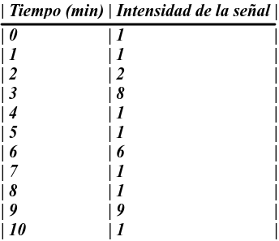
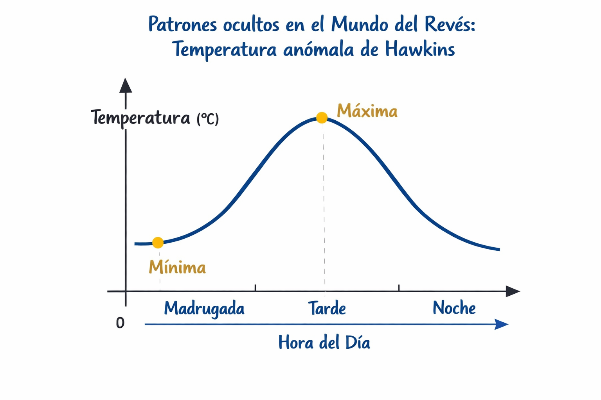

Contexto Narrativo: Stranger Functions - señales desde el Mundo del Revés
Algo extraño está ocurriendo en Hawkins.
Las luces parpadean sin explicación, los sensores registran valores imposibles y los gráficos muestran patrones inquietantes. El Mundo del Revés parece estar influyendo en nuestra realidad… pero para entenderlo necesitamos una herramienta poderosa: las funciones matemáticas.
Durante esta situación de aprendizaje te convertirás en un investigador matemático del Hellfire Club, encargado de interpretar señales, analizar datos reales y descubrir cómo las funciones explican fenómenos de la vida cotidiana. A través de retos, gráficas misteriosas y proyectos creativos aprenderás que las matemáticas no son solo números, sino una forma de comprender y predecir lo que ocurre a tu alrededor.
Prepárate para descubrir que las funciones están en todas partes, incluso donde menos lo imaginas.

FASE 1 — Motivar
🎬 ACTIVIDAD: Señales desde el Mundo del Revés
“Las luces parpadean, los sensores fallan… algo sigue un patrón extraño.”
En Hawkins están ocurriendo fenómenos extraños: luces que se encienden y apagan, temperaturas que cambian sin explicación y señales que parecen seguir patrones ocultos.
El profesor mostrará en la pizarra varias gráficas misteriosas que representan:
- La intensidad de una señal a lo largo del tiempo.
- La temperatura en distintos momentos del día.
- El consumo de energía en Hawkins.

En pequeños grupos, debéis responder oralmente:
- ¿Qué crees que representa cada gráfica?
- ¿Qué ocurre cuando el tiempo aumenta?
- ¿Hay momentos donde la gráfica sube, baja o se repite?
- ¿Crees que estas gráficas podrían ayudarnos a predecir lo que va a pasar?
Finalmente, el profesor os lanzará el gran reto del tema:
¿Y si todas estas señales pudieran explicarse con funciones matemáticas?
FASE 2 — Activar (conocimientos previos)
🧠 ACTIVIDAD: ¿Qué está pasando en Hawkins?
📺 “Antes de entender el Mundo del Revés, debemos observar cómo funciona nuestro mundo.”
Antes de empezar el nuevo tema, vamos a reflexionar sobre relaciones entre cosas que cambian en la vida cotidiana.
De forma individual, responde en tu cuaderno a las siguientes preguntas:
- Piensa en situaciones donde una cantidad depende de otra. Por ejemplo:
- El precio de algo y la cantidad que compras.
- El tiempo y la distancia recorrida.
- Las horas de luz y la época del año.
- Escribe al menos dos ejemplos y explica:
- Qué cambia.
- De qué depende.
- ¿Crees que estas relaciones siempre se comportan igual?
- ¿Siempre crecen?
- ¿A veces bajan?
- ¿Se repiten?
Después, pondremos en común algunas ideas en clase y veremos qué tienen que ver con lo que ocurre en Hawkins… y con las funciones.
✏️ No hay respuestas incorrectas: lo importante es pensar y razonar.
Fase 3: Explorar
ACTIVIDAD: Patrones ocultos en el Mundo del Revés
📊 “Nada es aleatorio en el Mundo del Revés… todo sigue una regla.”
Ahora vais a explorar cómo se relacionan dos variables sin usar todavía definiciones formales.
En parejas, recibiréis una ficha con una tabla de valores o una gráfica relacionada con Hawkins (por ejemplo, energía, tiempo, distancia, intensidad de señal…).
Tareas
- Observa los datos y responde:
- ¿Qué representa cada columna o eje?
- ¿Qué variable cambia cuando cambia la otra?
- Describe con palabras:
- ¿La relación siempre crece?
- ¿Siempre disminuye?
- ¿A veces se mantiene igual?
- Intenta completar:
- Una frase del tipo:
- “Cuando ___ aumenta, ___ …”
- Una frase del tipo:
- Si hay una gráfica:
- Localiza puntos importantes.
- Identifica cortes con los ejes, si los hay.
Después, cada pareja compartirá una conclusión con el resto de la clase.
💡 No necesitas saber todavía qué es una función: solo observar, describir y razonar.
🕹️ ACTIVIDAD (opcional de exploración): ¿Esto es una función o no?
🎯 “No todo lo extraño es una función… ¿o sí?”
Enunciado para el alumnado
El profesor mostrará distintas relaciones entre dos conjuntos (dibujos, flechas, esquemas o ejemplos cotidianos).
De forma individual, responde en tu cuaderno:
- ¿Crees que cada elemento de un conjunto tiene una sola respuesta o varias?
- ¿Te parece una relación “ordenada” o “caótica”?
- ¿Cuál crees que podría explicarse mejor con matemáticas?
|
|
|
|

|
Después debatiremos en grupo y construiremos juntos la idea de qué relaciones se pueden estudiar con funciones.

Ficha A: La señal del laboratorio de Hawkins
Los sensores del laboratorio de Hawkins han comenzado a detectar señales extrañas procedentes del Mundo del Revés. Los científicos han registrado la intensidad de la señal durante varios minutos, pero no saben cómo interpretarla.
Tu misión es analizar los datos y describir qué está ocurriendo, como un verdadero investigador matemático.
📊 DATOS REGISTRADOS

🔍 ACTIVIDADES
Observa la tabla y responde:
- ¿Qué dos magnitudes se relacionan?
- ¿Cuál crees que depende de la otra?
Describe con palabras lo que ocurre con la señal:
- ¿Es constante?
- ¿Hay cambios bruscos?
- ¿En qué momentos aparecen valores especialmente altos?
Completa la frase:
- Cuando el tiempo aumenta, la intensidad de la señal…
Si representaras estos datos en una gráfica:
- ¿Crees que sería una línea suave o con picos?
- Dibuja un boceto aproximado en el recuadro.
✏️ Reflexión final
¿Crees que este fenómeno se puede predecir fácilmente? ¿Por qué?
Ficha B: La temperatura anómala de Hawkins
Los habitantes de Hawkins han notado que la temperatura cambia de forma extraña a lo largo del día. Se han recogido datos para intentar entender el patrón oculto detrás de estos cambios.
Ayuda al Hellfire Club a interpretar esta información.
📈 GRÁFICA OBSERVADA
(El profesor muestra una gráfica similar a una curva suave)
Eje horizontal: Hora del día (0–24 h)
Eje vertical: Temperatura (°C)
La gráfica:

- Empieza con temperatura baja.
- Aumenta durante la mañana.
- Alcanza un máximo por la tarde.
- Desciende durante la noche.
🔍 ACTIVIDADES
Observa la gráfica y responde:
- ¿Qué representa cada eje?
- ¿Cuál es la variable que cambia primero?
Describe el comportamiento de la temperatura:
- ¿Cuándo aumenta?
- ¿Cuándo disminuye?
- ¿Hay algún momento en el que deje de cambiar?
Marca en la gráfica (o explica):
- Un momento donde la temperatura sea máxima.
- Un momento donde sea mínima.
Completa la frase:
- La temperatura depende de…
💡 REFLEXIÓN FINAL
- ¿Te resulta esta gráfica familiar en tu vida diaria?
- ¿Crees que este patrón se repite cada día?
- ¿Por qué crees que este tipo de relaciones se pueden estudiar con matemáticas?
Fase 4: Estructurar
ACTIVIDAD: El Diario de Hawkins
📖 “Algo extraño está ocurriendo en Hawkins… Para entenderlo, necesitamos dominar el lenguaje de las funciones.”
En esta actividad vas a convertirte en un investigador matemático de Hawkins. Para poder detectar anomalías entre el mundo real y el Mundo del Revés, necesitamos comprender bien qué son las funciones y cómo se comportan.
Durante la explicación del profesor, deberás escuchar activamente, tomar apuntes claros y ordenados en tu cuaderno y participar cuando se planteen preguntas o ejemplos en la pizarra.
A lo largo de la sesión trabajaremos los siguientes conceptos fundamentales:
- Qué es una función.
- Dominio y recorrido.
- Continuidad y puntos de corte.
- Crecimiento y decrecimiento, máximos y mínimos.
- Periodicidad y simetría.
Después, aplicarás lo aprendido resolviendo ejercicios del libro de texto y fichas ambientadas en Stranger Things, donde cada problema te ayudará a interpretar mejor lo que ocurre en Hawkins desde un punto de vista matemático.
📝 Tu trabajo se reflejará en el cuaderno, que será una evidencia importante de tu aprendizaje.

Fase 5: Aplicar
🧠 ACTIVIDAD: Sofía vence al demogorgon
👩🔬 “No todas las batallas se ganan con fuerza. Algunas se ganan con conocimiento.”
El Demogorgon representa los obstáculos que la ciencia y las matemáticas han tenido que superar a lo largo de la historia. En esta misión conocerás a Sofía Kovalevskaya, una matemática excepcional que rompió barreras y abrió camino a muchas mujeres en la ciencia.

Tareas
- Realiza una búsqueda de información en Internet sobre:
- Su vida.
- Su formación.
- Sus aportaciones a las matemáticas.
- Las dificultades que tuvo que superar.
- La búsqueda puede hacerse por parejas, contrastando información y seleccionando fuentes fiables.
- A partir de la información recopilada, elabora de forma individual un texto manuscrito en el que expliques:
- Quién fue Sophie Kovalevskaya.
- Por qué es una figura relevante en la historia de las matemáticas.
- Qué enseñanza podemos extraer hoy de su trayectoria.
✍️ El texto debe estar bien estructurado, escrito con tus propias palabras y cuidando la presentación.
🌍 ACTIVIDAD: Creamos Functions Things
Las funciones no solo existen en los libros de matemáticas. Están escondidas en nuestra vida diaria, como si pertenecieran al Mundo del Revés. Tu misión será descubrirlas y sacarlas a la luz.
Pregunta guía:
¿Dónde están las funciones que usamos cada día sin darnos cuenta?
Tareas
- En una primera fase, trabaja por parejas para:
- Pensar en situaciones reales de la vida cotidiana donde aparezcan relaciones entre dos variables.
- Compartir ideas y seleccionar ejemplos adecuados.
- De manera individual, deberás:
- Elegir 3 situaciones reales donde intervengan funciones.
- Recoger datos reales o simulados.
- Identificar el tipo de función que modeliza cada situación.
- Analizar sus características principales (dominio, recorrido, crecimiento, etc.).
- Representarlas mediante tablas, gráficas o expresiones, si es posible.
- Con todo ello, crearás una presentación digital (Canva, Genially u otra herramienta) con una narrativa inspirada en Stranger Things, por ejemplo:
- “Las funciones del Mundo del Revés se esconden en mi mundo en…”
- Finaliza tu trabajo con una reflexión personal sobre:
- Para qué sirven las matemáticas.
- Cómo ayudan a comprender y mejorar la realidad.
🎨 Se valorará tanto el contenido matemático como la claridad, creatividad y originalidad de la presentación.
Fase 6: Concluir
🔥 ACTIVIDAD: Reunión del Hellfire Club
🎲 “Todo buen aventurero debe explicar su estrategia al resto del grupo.”
Ha llegado el momento de compartir vuestro trabajo con el Hellfire Club Matemático.
Desarrollo de la actividad
Trabajaréis en grupos de 4 o 5 personas.
Cada alumno dispondrá de 2–3 minutos para presentar su proyecto “Functions Things” al resto del grupo.
Mientras un compañero expone, el resto del grupo:
- Escucha con atención.
- Toma notas.
- Ofrece feedback constructivo, valorando:
- Claridad de la explicación.
- Uso correcto del lenguaje matemático.
- Creatividad y conexión con la vida real.
Al finalizar todas las exposiciones:
- Completarás una rúbrica de autoevaluación.
- Realizarás una coevaluación del trabajo de tus compañeros.
🧠 Esta reunión sirve para reflexionar sobre lo aprendido, mejorar la comunicación matemática y valorar el error como parte del proceso.
Como cierre final, entre toda la clase crearéis un mural digital con una colección de funciones reales, demostrando que las matemáticas están en todas partes.